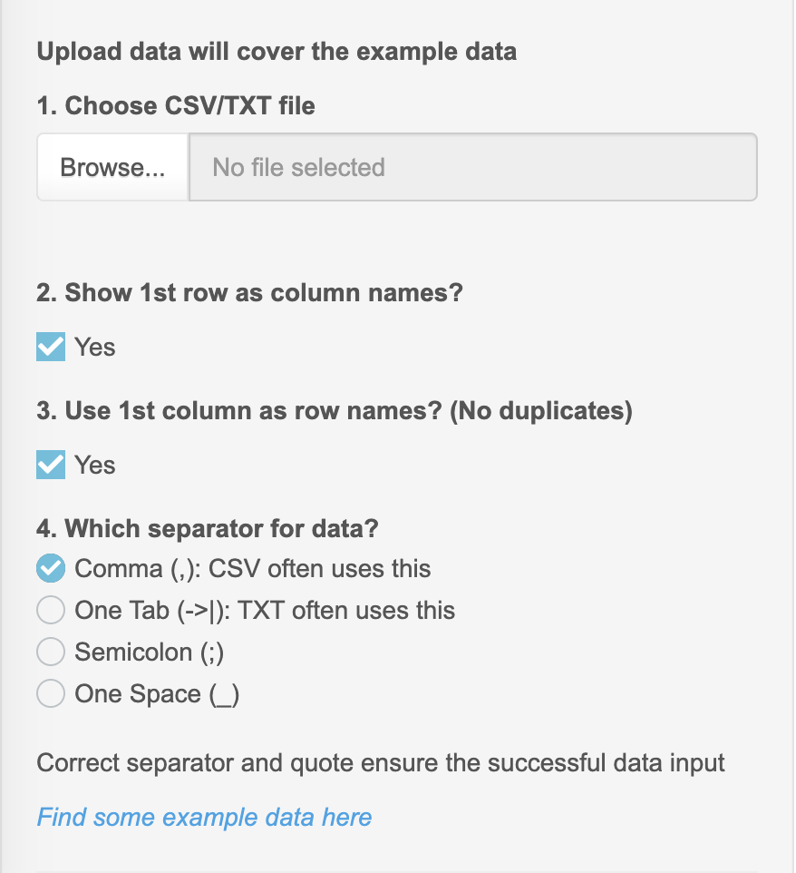
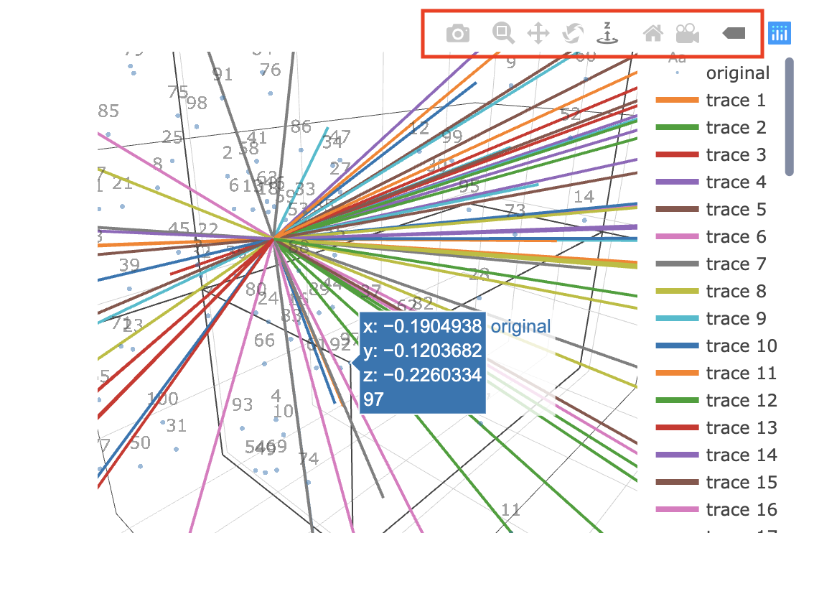

How to use the tool options
1. Inputs
This part is laid in the left of the interface (in red square 2).
1.1. Manual input data
Data can be manually input in the box. The size of box is changeable. The input data will be shown in the right output.
1.1.1. Box for data name

Notes
Each line is used to input only one name
Do not leave missing value, because this may cause some error in the result
GIF example

1.1.2. Box for data manual input

Notes
Values are separated by , ; space tab, although space and tab are not recommended to use
Data can be directly copied and pasted from CSV file into the box
Missing value can be input as NA or space (NA is recommended)
1.2. Upload CSV/TXT panel
The data upload from this panel will cover the manual input data. The input data will be shown in the left output.

Notes
Click Browse... to open folder.
Show 1st row as column names?: Yes, when first row in the data are the names.
Use 1st column as row names? (No duplicates): Yes, when first column is ID or row names.
When data is TXT file, please choose the correct separator.
1.3. Create the contingency table
Step 1: reset or replace row names and column names
Step 2: input enough values manually to fill the table in row order, but do not input missing values

- Finally, we can get a valid contingency table, with sum in the row and column.

1.4. Input parameters
This part is laid in the left of the interface (in red square 2).
1.4.1. Number input box

This box is used to input the numeric values and provides two ways to input the values:
input values directly
use the up/down button in the right
GIF example

1.4.2. Numeric input bar

Adjust the bar left or right to change to values.
1.4.3. Yes/No check

Click to tick or untick to choose yes or no.
1.4.4. Choice button

Click the button to change the choice.
1.4.5. Single choice box

This box only allows to choose one item from the list.
1.4.6. Multiple choice box

This box allows to choose more than one item from the list.
Click to input items
Enter/Backspace on the keyboard can also control the choice
GIF example

1.5. Change the type of variables
In the regression and dimensional analysis methods, we created panels under the Data tab to preprocess the data. This is the overview of this panel.
1.5.1. Convert numeric variable into categorical variable
- Choose some variable from the list. For example, we wanted to convert "Birthweight" into a categorical variable, although this is not appropriate.

- We can see that in the categorical variable information list, "Birthweight" became the categorical variable with 7 levels ("95", "100", "105", "120", "125", "130", "135").

1.5.2. Convert categorical variable into numeric variable
- Choose some variable from the list. For example, we wanted to convert "Age.group" into a numeric variable, although this is not appropriate.

- We can see that in the numeric variable information list, "Age.group" became the numeric variable with values 1 2.

1.6. Change the reference levels of categorical variables
- Before the change, the reference levels of "Age" and "Age.group" are "2" and "a".

- We choose some categorical variables, and input the desired reference level. One line is used to input one value.

- After the change, the reference levels of "Age" and "Age.group" are "2" and "a".

2. Outputs
This part is laid in the right of the interface (in red square 3).
2.1. Statistical tables
Most tables in MEPHAS are shown by DT package.

Notes
The buttons in the left-top are used to download table. When download the table, users need to give a new name to the file
The box in the right-top is used to search the value
2.2. Statistical plots
Plots in MEPHAS are shown by ggplot2 package and plotly package
- Save ggolot2 plots: right click can save the plot as image

- Save 2D plotly plots: users can control the plot using the buttons in top-right

- For 3D plotly plots: 3D plots need some time to load, and users can control the plot using the buttons in top-right
